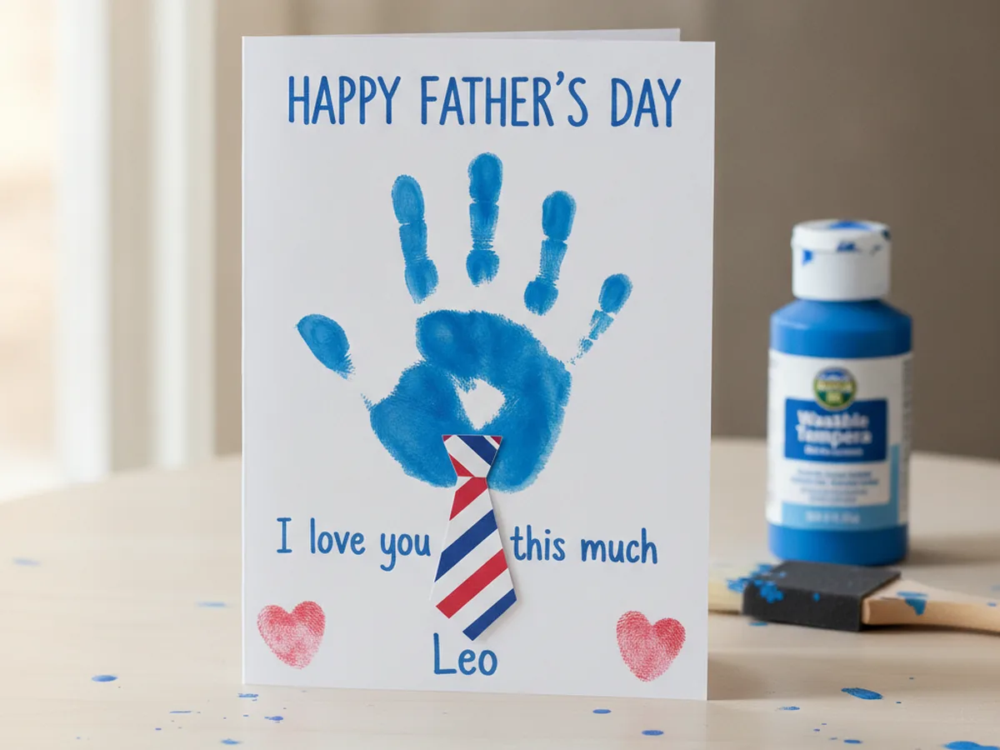
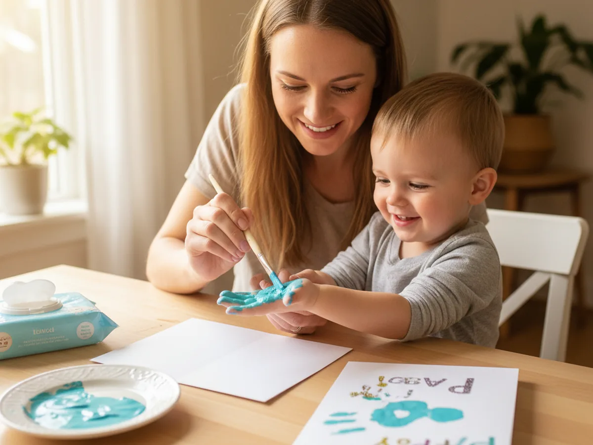
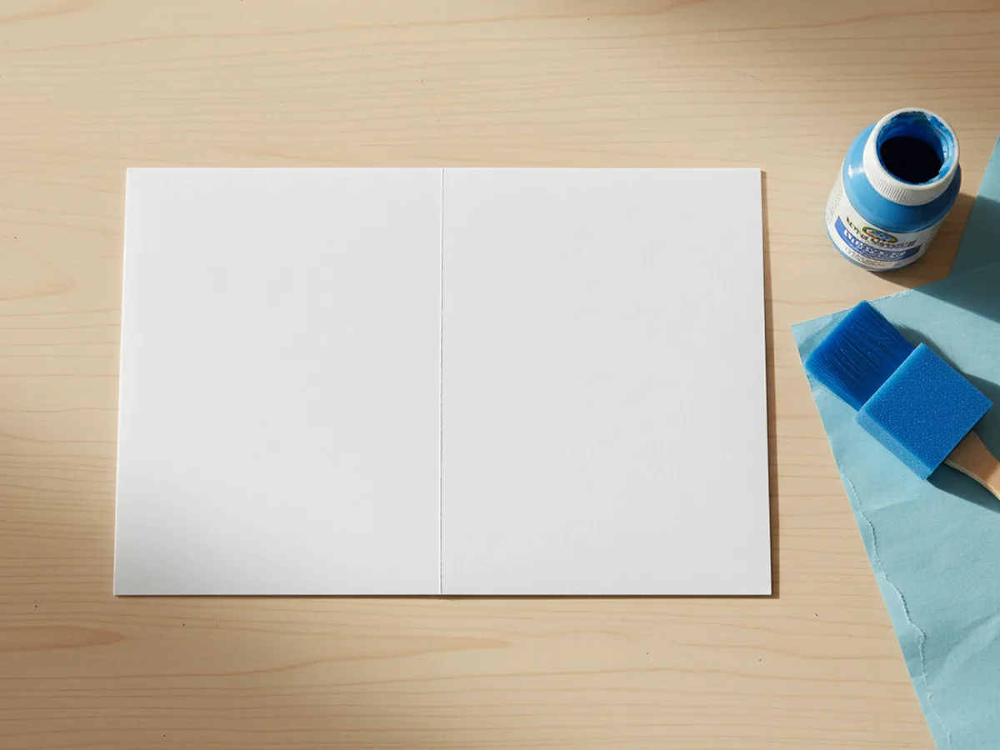
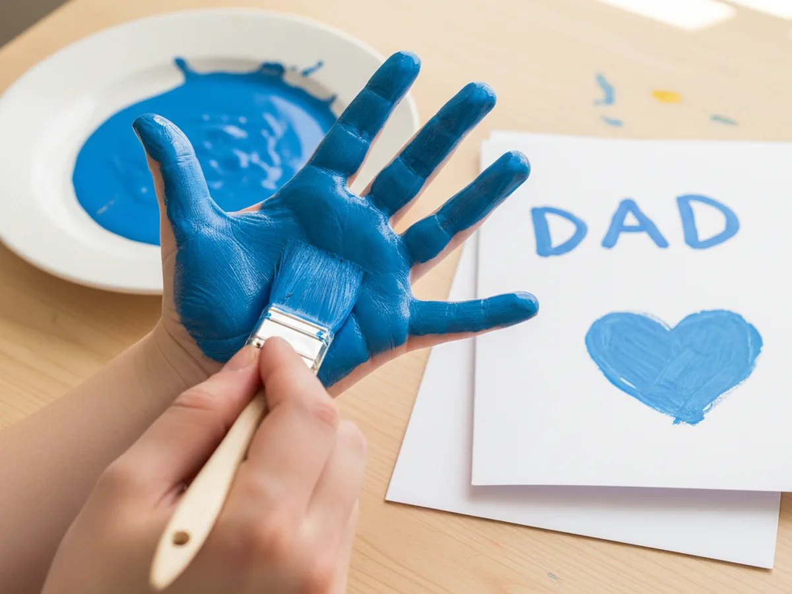
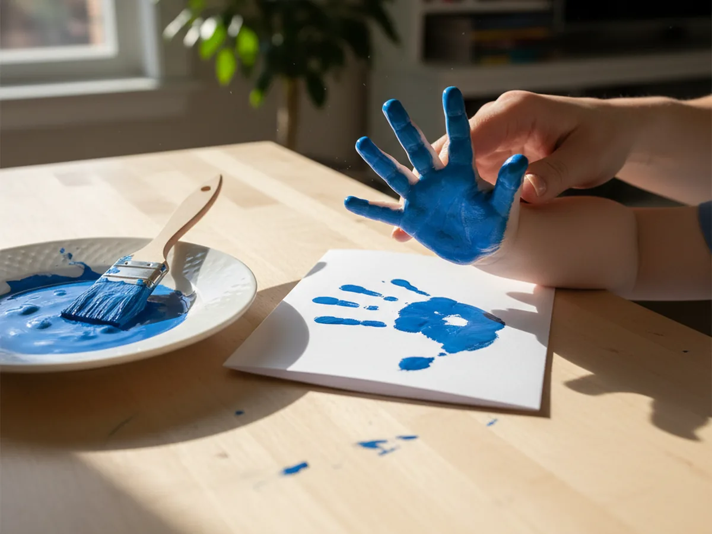
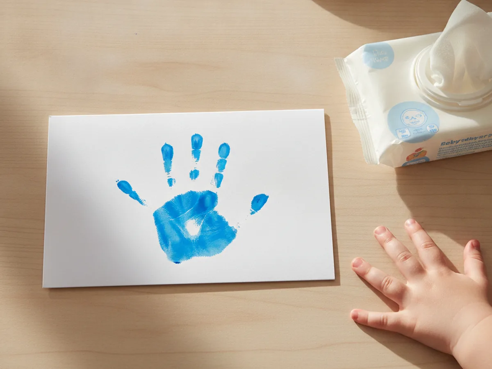
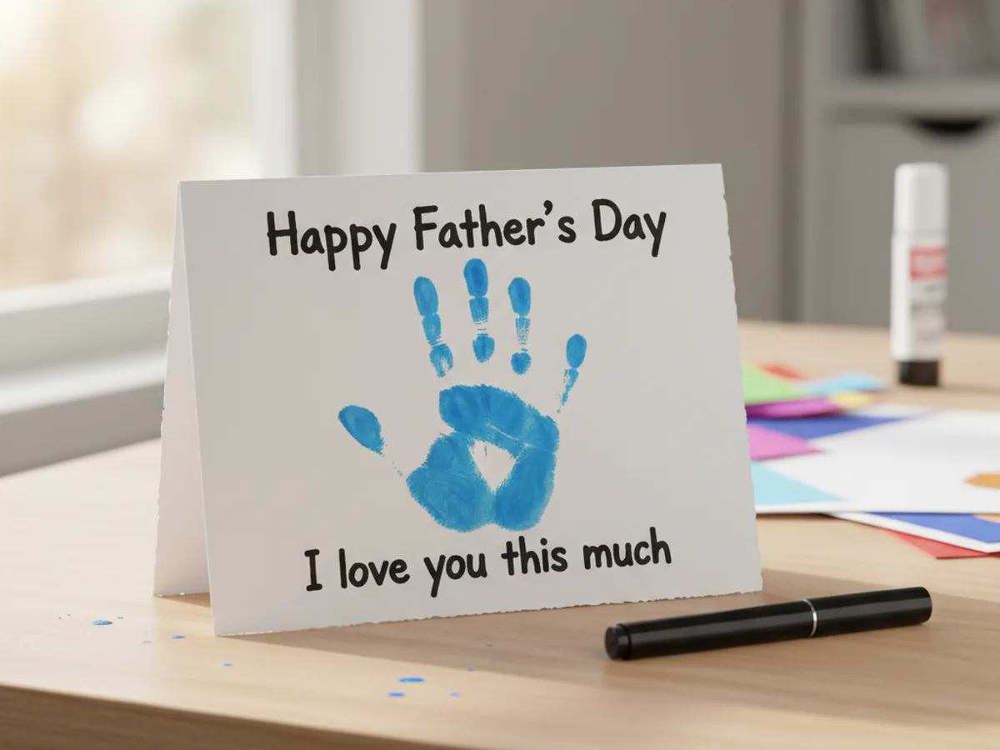
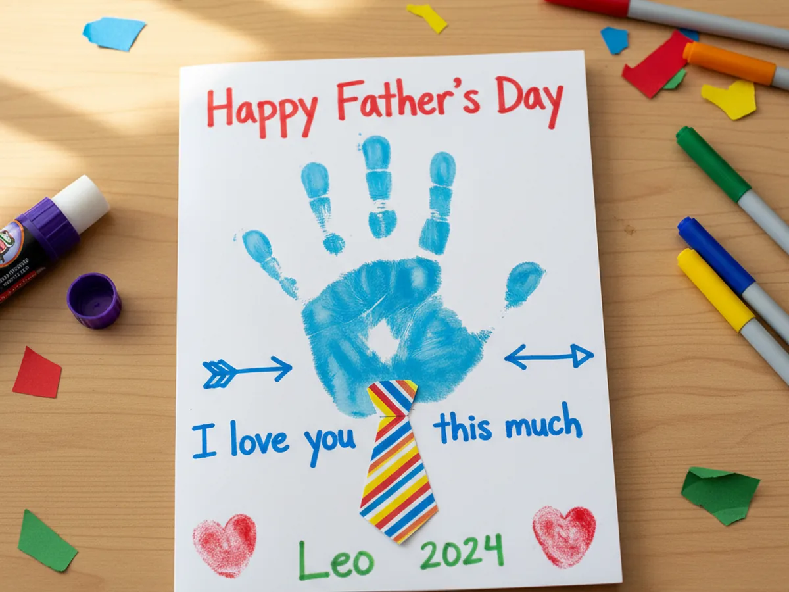

There is no gift quite as sweet as a tiny hand, and this Father's Day handprint craft turns your child's little palm into a keepsake card Dad will hold onto for years. With a sheet of cardstock, a little washable paint, and a few minutes of giggles, you and your child can make a card that feels personal, proud, and impossible to throw away. It is foolproof for beginners, gentle enough for toddlers, and the kind of project that ends with a real treasure instead of a mess. Grab some paint and let's make a handprint card Dad will love this year! 💙
Why Kids Love This Craft
Kids adore this craft because they are the star of it. Their own hand becomes the whole picture, so they feel like the card is truly theirs in a way a store-bought one never could be. Pressing a painted palm onto paper is also wonderfully satisfying, a little squishy, a little ticklish, and very exciting to peel away and see the print appear. That happy surprise is half the fun. 😊
There is gentle learning hiding in here too. Spreading the paint and pressing down builds hand strength and body awareness, while adding fingerprint hearts and signing a name gives small hands good fine motor practice. Choosing the colors and the message lets your child make real decisions, which quietly grows their confidence and pride in the finished card.
Best of all, this Father's Day handprint craft is forgiving and low-stress. A slightly smudged print only makes it look more handmade and more loved, so there is no pressure to be perfect. It uses simple supplies, cleans up easily with washable paint, and works for every age, which makes it an easy yes even on a busy week before Father's Day.

What You'll Need
Here is everything you need for this easy handprint keepsake card, and most of it is probably already tucked in your craft drawer.
- White cardstock, a sturdy sheet folds into a card that stands up on Dad's desk.
- Washable kids paint, easy to wipe off little hands and gentle on clothes.
- Foam brushes, perfect for spreading a thin, even layer of paint across the palm.
- Construction paper, for cutting a little paper tie and a few small hearts.
- Washable glue sticks, for sticking the paper tie onto the front of the card.
- Washable markers, for writing the message and adding sweet little details.
- Baby wipes or a damp cloth, for quick and easy hand cleanup afterward.
Step-by-Step Instructions
Ready to make something Dad will treasure? Follow these simple steps and you will have a finished handprint card in about half an hour, with a few helper tips along the way.
Step 1: Fold the Card Base
Start by folding a sheet of sturdy white cardstock in half, like a book, and press along the crease so it lies flat. This folded piece becomes the front and inside of your card, with plenty of room for the handprint on the outside and a message tucked inside. A heavier cardstock works best for this Father's Day handprint craft because it holds the wet paint without curling or soaking through.

Step 2: Paint Your Child's Palm
Now for the fun part. Squeeze a little washable paint onto a plate and use a foam brush to spread a thin, even coat over your child's palm and fingers. Let your little one pick the color, whether it is a deep Father's Day blue, a bright green, or their favorite shade. A thin layer prints much more clearly than a thick, gloopy one, so brush off any extra before you press.

Step 3: Press the Handprint
Help your child spread their fingers wide and press their painted hand firmly onto the front of the folded card. Gently push down on each finger and the heel of the palm so the whole print transfers, then lift the hand straight up without sliding it. Peeling the hand away to reveal a crisp little handprint is the magic moment of the whole Father's Day handprint craft, so go slow and enjoy it together. ✨

Step 4: Let It Dry and Clean Up
Set the card somewhere flat and safe to dry for a few minutes while you wipe your child's hand clean with a baby wipe or damp cloth. Washable paint comes off skin easily, so cleanup is quick and stress-free. Letting the print dry fully before you decorate keeps the colors from smearing, and it gives your little one a perfect moment to admire the handprint they just made.

Step 5: Write Your Father's Day Message
Once the handprint is dry, it is time to add the words that make it a card. Use a marker to write Happy Father's Day above the handprint and a sweet line like "I love you this much" just below it, as if the open hand is showing exactly how big that love is. For younger kids, you can write the message and let them trace over your letters or simply watch and cheer.

Step 6: Add a Paper Tie and Finishing Touches
Now bring it all together with a few cheerful details. Cut a small tie shape from construction paper and glue it right at the wrist of the handprint so it looks like Dad's shirt and tie. Add a couple of little fingerprint hearts in the corners, then have your child sign their name and the year. Step back and admire the finished handprint keepsake card you made together, ready to surprise Dad on his special day.

Variations to Try
Footprint Version: Trade the handprint for a footprint to capture your littlest one before they grow. A tiny painted foot makes an unbelievably sweet keepsake, and it is perfect for babies who cannot open their hands for a print just yet.
Canvas Keepsake: Instead of cardstock, press the handprint onto a small canvas or wood plaque with acrylic paint for a lasting piece Dad can hang up. Add the year and a short message for a gift that lives on the wall instead of in a drawer.
Whole Family Print: Let each child add a handprint in a different color on one big card, then label each print with a name. This turns the simple Father's Day handprint craft into a colorful family portrait Dad will love.
Final Thoughts
This Father's Day handprint craft proves that the most meaningful gifts are often the simplest ones. It takes just a few supplies and half an hour, yet it captures something Dad cannot buy anywhere, the exact size of his child's hand on this one special year. The smudges, the slightly crooked tie, and the wobbly signature are not mistakes at all, they are the parts that make him smile every time he looks at it. 🎁
So spread out some paper, squeeze out the paint, and savor this warm little moment with your child. Dad is going to treasure the card, and you will treasure the memory of making it together. Happy crafting, friend!
More Crafts You'll Love
If your little one loved making something special for Dad, these sweet keepsake crafts are a perfect next project: